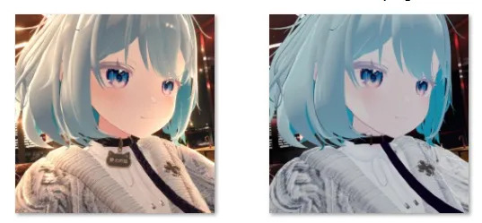

image.tobenot.top · 免费在线工具
浏览器打开就能用的生图工具。接前沿生图模型,想画几张画几张。

兼容 OpenAI API,想用最新的生图模型生成几张图,这里就是最快的路。
没有客户端,没有环境配置。打开网页,填上 API Key 就能画。
角色、插画、头像、概念图——描述你的想法,它负责画出来。
适合"就想要几张图"的场景:不做长期工程,不搭复杂流程,画完就走。
API Key 自己填,生成的图自己存。一个轻量工具,不多问你要任何东西。
工具本身免费,只需要你自己的模型 API 额度。没有隐藏收费,没有会员墙。
← 回作品集看全部作品